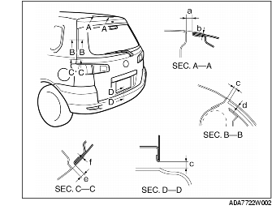

Liftgate adjustment
1. Measure the gap and height difference between the liftgate and the body, and verify that they are within the specification.
2. Loosen the liftgate hinge installation bolts or the liftgate striker installation screws, and reposition the liftgate.

Clearance
- a: 5.0-7.0 mm {0.20-0.27 in}
- b: 0-2.0 mm {0-0.078 in}
- c: 4.0-8.0 mm {0.16-0.31 in}
- d: 0-4.0 mm {0-0.15 in}
- e: 3.8-6.2 mm {0.15-0.24 in}
- f: -1.2-1.2 mm {-0.047-0.047 in}
3. Tighten the bolts or screws.